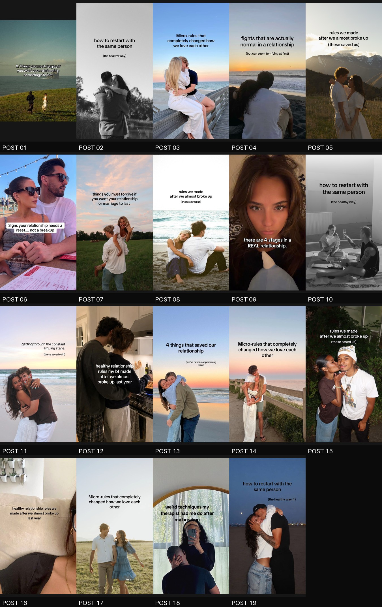

Relatable distribution
- Human hooks and conversational language
- Lived experience only when evidence supports it
- Broad relationship moments that attract the right audience
- Natural Auré mention after value, not a forced pitch
Pre-launch to launch
A straight explanation of what I am doing for Auré today, what the slideshow results actually prove, and how I plan to turn organic reach into app growth once there is a live product to show.
Use cheap, scalable slideshows to learn what earns attention before launch. Then keep the winning messages and test them inside UGC, POV, reaction, and product-demo formats that can actually show Auré.
I am producing and testing relationship slideshows across Maria and Auré Official. They are fast, inexpensive top-of-funnel content: good for earning attention and learning hooks.
The owned accounts have 687.8K tracked views, and the outside audit found the same slideshow mechanisms reaching hundreds of thousands or millions across multiple accounts.
When the app launches, slideshows stay in the mix, but I add formats with stronger conversion potential: demos, emotional POVs, text over b-roll, reactions, and creator-led UGC.
Relentless controlled testing. Keep what repeats, change one major variable at a time, and let Auré's own clicks, installs, activation, and retention outrank competitor views.
Top of funnel means attention and awareness. It does not prove that someone will download or use the app.
The assistant handles context and creative judgment. ContentOS keeps the work organized and exportable. I review the actual slides, publish manually, and use performance to decide what deserves another test.
I send TikToks, screenshots, voice notes, rough ideas, or feedback. I do not have to fill out a second intake form.
CurrentThe assistant identifies the hook, sequence, emotional mechanism, account fit, truth risks, and whether it should be recreated, varied, explored, or held.
CurrentCopy, imagery, account perspective, source fidelity, and Auré placement are checked before the draft reaches review.
CurrentContentOS stores lineage and renders the package. I make the visual call and post to TikTok myself.
ManualThe dashboard can reconcile live posts and store metrics. Continuous hourly reconciliation is a planned improvement, not a current claim.
PartialThe result is not “slideshows solve growth.” The result is that we can test many hooks and emotional frames quickly, then carry the strongest messages into formats that can show the product.

Pre-launch has one job: build audience awareness and creative evidence while making the operation faster, more consistent, and safer.
Preserve a proven mechanism and change one named variable, such as hook wording, topic angle, image treatment, or CTA.
Test a new topic or format without turning the whole week into random disconnected ideas.
Human, conversational content with first-person language only when the story is supported.
Reader-facing education, product context, and no fabricated personal relationship experience.
Wait for a mature sample before declaring a format dead or universally successful.
A failed version helps identify which variable or account context did not travel.
Pre-launch views do not establish customer acquisition, installs, retention, or meaningful product behavior. Those become measurable only after a real conversion path exists.
Slideshows stay useful for reach, but launch unlocks content that can move from an emotional moment into a real product experience. Each format below is a hypothesis to test, not a promise that it will convert.
Start with a real situation, then show the relevant Auré flow plainly.
“POV: you found out he cheated and you are spiraling at 3 AM,” followed by the exact support experience inside Auré.
A wall of text or recognizable yellow-text hook over emotionally congruent b-roll, then a clean product reveal.
React to a relationship scenario, post, or common question, then demonstrate how Auré supports that moment.
A creator explains a real problem, gives an honest first impression, or walks through the product in native language.
Test one or two credible conversation clips as adjacent exploration, not as the center of the launch plan.
Observed social examples support the format ladder, but none of these public view counts prove installs or activation.
A specific relationship-memory trigger cut into a boundary-tracker interaction. This supports emotion-to-interface sequencing.
Source ↗A seven-word hook over sad bedroom footage cut into one visible app result after roughly five seconds.
Source ↗The app appeared at frame one and completed one narrow, legible job. Product clarity did not require a lifestyle preamble.
Source ↗A short creator hook led to a fast demonstration and visible result, creating curiosity without hiding the product.
Source ↗It proved attention potential, not product curiosity. Undisclosed synthetic authority creates enough trust risk to keep this experimental.
Source ↗The point is not to spray thirty unrelated ideas. The point is to create interpretable evidence, keep the message consistent enough to compare formats, and then spend more output on the winner.
Compare two POV demos, two direct demos, and one no-product b-roll control.
Keep the winning format fixed. Compare five evidence-based hook families.
Show the product at frame one, 3s, 5s, 7s, and on slide two.
Compare five real in-app jobs while holding the hook and edit fixed.
Compare brand voice, real user, creator UGC, reaction, and screen-record voiceover.
Adopt the least forceful CTA that still improves qualified action.
Before launch: watch time, completion, shares, saves, profile activity, and account-relative views. After launch: add click-through, install or signup where measurable, activation, retention, and meaningful support behavior.
The accounts can cover the same underlying problem, but the voice, claim, and product role should not be interchangeable.
I do not need line-by-line approval on every post. I need clear policy decisions on the topics and claims where virality can create positioning risk.
Recommended default: support the person's decision without implying they should reconcile, forgive, stay, or break up.
Recommended default: avoid universal models and never normalize coercive, threatening, or harmful behavior.
Recommended default: Auré is support and education, not therapy, diagnosis, crisis care, or a substitute for professional help.
Recommended default: POV scenarios may dramatize a moment, but cannot be presented as a real testimonial or verified user outcome.
Recommended default: show only verified functionality and route to one measurable launch action.
Recommended default: I run controlled variations inside approved boundaries, then bring genuinely new positioning back for review.
ContentOS matters because it makes high-volume testing traceable. Lightreel adds live social research. Neither replaces judgment, product truth, or manual publishing.
I can send rough direction once and let the assistant interpret it against all known context.
The source, draft, images, status, and performance stay connected.
The first structured Auré research pass is complete. Live examples now inform the launch ladder, but Auré's own results still make the final decision.
I remain the final reviewer and publisher. No autonomous posting is part of this plan.
The intended logic exists, but it is not yet fully wired into production.
These become important when owned conversion evidence can outrank views.
Slideshows are the pre-launch learning engine, not the final form of Auré marketing.
I plan to master their speed and repeatability now, carry the winning messages into product-visible formats at launch, and relentlessly test until Auré's own behavior shows us what to scale.